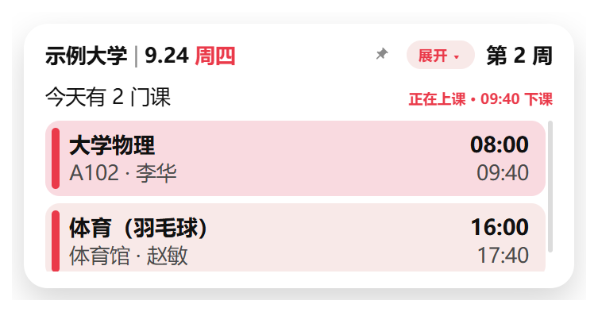
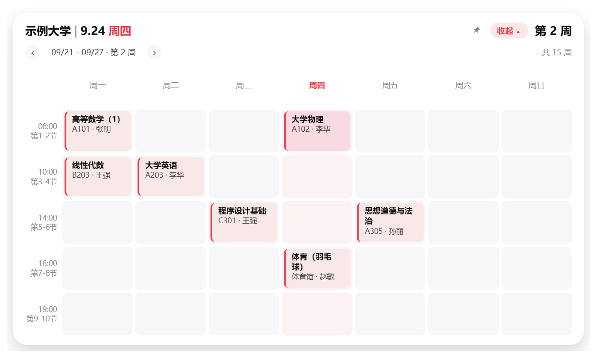
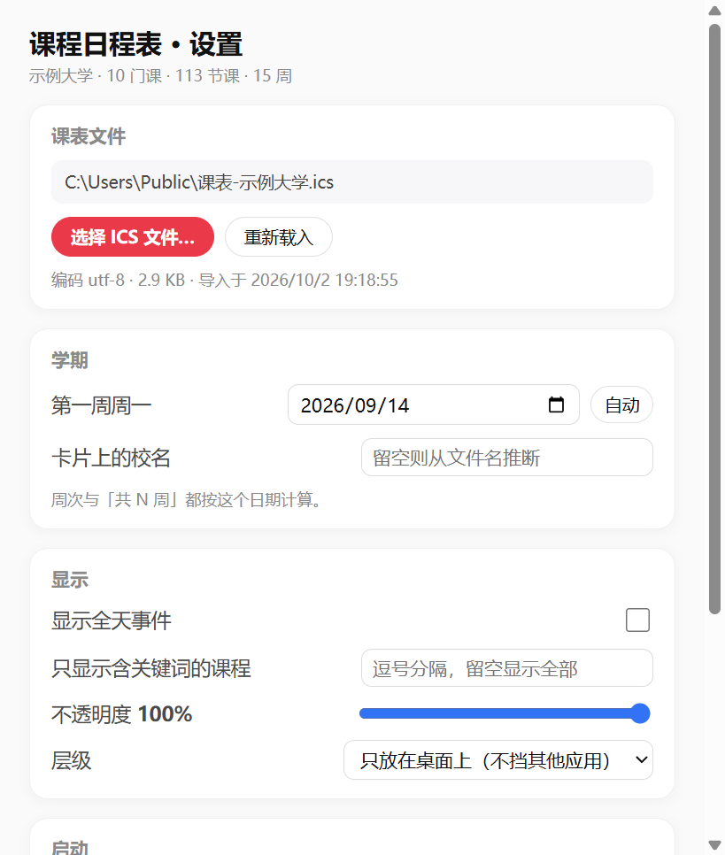

课程日程表 · 使用说明
一个悬浮在 Windows 桌面上的课程表小组件：导入教务系统的课表文件后，随时能看到今天有什么课、 下一节几点开始，也可以展开看整周课表。它默认待在桌面层，不会挡在别的软件上面。
一、安装
- 把安装包
课程日程表-Setup-1.0.2.exe拷到目标电脑。 - 双击运行。若弹出蓝色的「Windows 已保护你的电脑」，点 更多信息 → 仍要运行（安装包没有购买代码签名证书，属正常提示）。
- 安装向导里可以改安装位置，也可以直接用默认位置，点「安装」。
- 装完会自动创建桌面快捷方式和开始菜单项；安装不需要管理员权限。
卸载：开始菜单搜索「课程日程表」→ 卸载，或「设置 → 应用 → 已安装的应用」里卸载。 卸载不会删除你的课表和设置。
二、第一次使用：导入课表
- 启动程序，卡片出现在桌面右下角。把鼠标移到卡片上，底部会浮出一排按钮。
- 点 导入，选择课表文件（
.ics结尾，例如课表-示例大学.ics）。 - 导入成功后卡片立刻显示今天的课。程序会记住文件位置，以后自动加载，不用再导。
三、界面说明

| 位置 | 含义 |
|---|---|
左上 示例大学 | 9.24 周四 | 校名、日期、星期（星期为红色） |
右上 第 4 周 | 学期第几周，点它可以修改开学日期 |
今天有 4 门课 | 当天课程数；今天没课时会自动显示「明天有 N 门课」并列出那天的课 |
| 粉色课程条 | 课程名（加粗），下面一行是上课地点 · 教师（例如 A101 · 张明），右侧是开始与结束时间 |
红色小字 正在上课 · 09:45 下课 | 当前正在上的课，该行底色会加深 |
| 已结束的课 | 整行变淡 |
四、常用操作
展开完整周课表
点右上角的 展开 ▾，卡片变成整周课表（周一至周日 × 上课时间），今天那一列标红； 再点 收起 ▴ 回到小卡片。

查看其他周的日程
周课表左上角有翻页按钮：点 ‹ 看上一周，点 › 看下一周，中间的
09/21 - 09/27 · 第 4 周 会跟着变（开学前显示「未开学」，学期结束后显示「假期」）。
翻到别的周时右边会出现 回到本周 按钮，点一下立刻跳回本周；只有本周才把当天那一列标红。
需要时置顶
默认情况组件待在桌面层，不会挡住其他软件。需要它一直浮在最上面时，点「展开」左边那枚 小钉子：钉子变红表示已置顶，再点一下取消。
移动和缩放
- 移动：按住卡片顶部两行（校名那一行、「今天有 N 门课」那一行）拖动。
- 缩放：拖动窗口边缘。位置和大小会被记住，下次启动还在原处。
修改开学日期
点右上角的 第 N 周 → 选第一周的周一 → 点「保存」。周次与周课表表头都会跟着变；
点「自动」则改回按课表里最早的一节课自动推断。
打开设置
鼠标移到卡片上 → 点 设置；或右键系统托盘图标 →「打开设置…」。

| 分组 | 能改什么 |
|---|---|
| 课表文件 | 换课表文件、重新载入；显示路径、编码与导入时间 |
| 学期 | 第一周周一、卡片上显示的校名 |
| 显示 | 是否显示全天事件、只显示含关键词的课程、不透明度、是否置顶 |
| 启动 | 开机自动启动 |
| 数据 | 解析统计、打开数据目录、清空课表数据 |
托盘菜单
程序常驻系统托盘（图标是一张迷你课程卡片）。左键单击 = 显示/隐藏卡片，右键 = 菜单：隐藏/显示、 导入课表、重新载入课表、打开设置、置顶显示、开机自动启动、退出。
任务栏右下角看不到图标是 Windows 11 的默认行为：新图标会被收进「^」折叠区。 打开「设置 → 个性化 → 任务栏 → 其他系统托盘图标」，把「课程日程表」打开即可常驻显示， 也可以直接从折叠区把图标拖到任务栏上。
五、课表会自动更新
课表有变动（调课、换教室）时，用同一个文件名重新导出、覆盖原来的 .ics，
组件会在约 0.3 秒后自动刷新，不需要重启，也不需要重新导入。若新文件损坏，组件会保留上一次的
课表并在底部提示，不会变成空白。也可以手动刷新：设置里的「重新载入」或托盘菜单的「重新载入课表」。
六、数据在哪里、怎么备份
所有设置与课表数据都在 %APPDATA%\class-calendar\（地址栏粘贴回车即可打开，或用设置里的「打开数据目录」）。
| 文件 | 内容 |
|---|---|
settings.json | 窗口位置大小、开学日期、校名、不透明度、是否置顶、开机自启等 |
schedule.json | 解析后的课表数据 |
backup\ | 每次导入前的上一份课表（保留最近 5 份） |
换电脑时，把整个 class-calendar 文件夹拷过去即可恢复；也可以只保留 .ics 文件重新导入一次，更干净。
七、常见问题
- 任务栏里找不到程序图标？
- 设计如此——组件只在桌面悬浮，不占用任务栏。请从桌面、开始菜单或系统托盘打开。
- 周次显示不对（例如显示「未开学」）？
- 点右上角
第 N 周，把第一周周一改成你校历上的日期，点保存。 - 今天没课，为什么显示的是明天的课？
- 这是故意设计的：今天没课时自动展示下一个有课的日子，标题会写明「明天有 N 门课」。
- 某节课没显示出来？
- 检查：① 设置里「只显示含关键词的课程」是否填了内容；② 是否为全天事件且关闭了「显示全天事件」；③ 课表文件里是否包含这节课。
- 教室或教师显示成「周次」，或者显示不全？
- 请确认版本为 1.0.3 或更高——旧版本遇到「周次：第 4-17 周」这类描述会误判成教室。新版按四级规则识别（自定义字段 → 描述里的「教师：」「教室：」标签行 → 描述三行 → 位置字段），并把周次单独归类；课表里确实没写的信息会留空。
- 想看下周、下下周的课？
- 展开成周课表后，用左上角的 ‹ › 翻页；点「回到本周」随时跳回本周。
- 卡片上显示的地点不对？
- 地点取自课表文件的
LOCATION字段（教务系统导出的教室）。如果导出文件里教室为空，这里只显示教师；重新导出一次课表即可更新。 - 课表文件被删了或挪走了？
- 程序会提示读取失败并继续用上一次的数据，重新导入新位置的
.ics即可。 - 开机没有自动启动？
- 在设置里勾选「开机自动启动」；如果之后移动过程序位置，重新勾一次。
- 想临时露出桌面壁纸？
- 托盘菜单点「隐藏组件」，需要时再点「显示组件」。
八、卸载
开始菜单 → 右键「课程日程表」→ 卸载，或「设置 → 应用 → 已安装的应用」里卸载。
卸载不会删除 %APPDATA%\class-calendar，需要彻底清理时手动删除该文件夹。